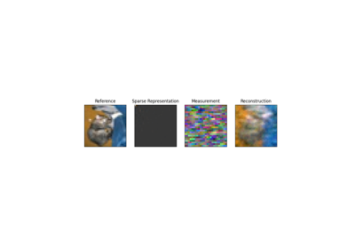
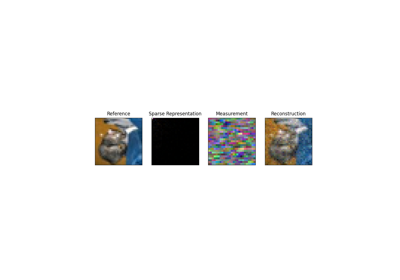

DCT2D
- class colibri.recovery.terms.transforms.DCT2D(norm='ortho')[source]
Bases:
object2D Discrete Cosine Transform
The 2D DCT is defined as:
\[X(u,v) = \frac{2}{\sqrt{MN}} \sum_{x=0}^{M-1} \sum_{y=0}^{N-1} x(u) y(v) f(x,y) \cos\left(\frac{(2x+1)u\pi}{2M}\right) \cos\left(\frac{(2y+1)v\pi}{2N}\right)\]The 2D DCT is a separable transform, and can be computed as two 1D DCTs along the rows and columns of the image.
- Parameters:
norm (str, optional) – The normalization to be applied to the transform. Defaults to ‘ortho’.
- Returns:
The 2D DCT of the input image.
- Return type:
torch.Tensor
Initializes the DCT2D class.
- Parameters:
norm (str, optional) – The normalization to be applied to the transform. Defaults to ‘ortho’.
Examples using DCT2D:

Demo FISTA.

Demo PnP.